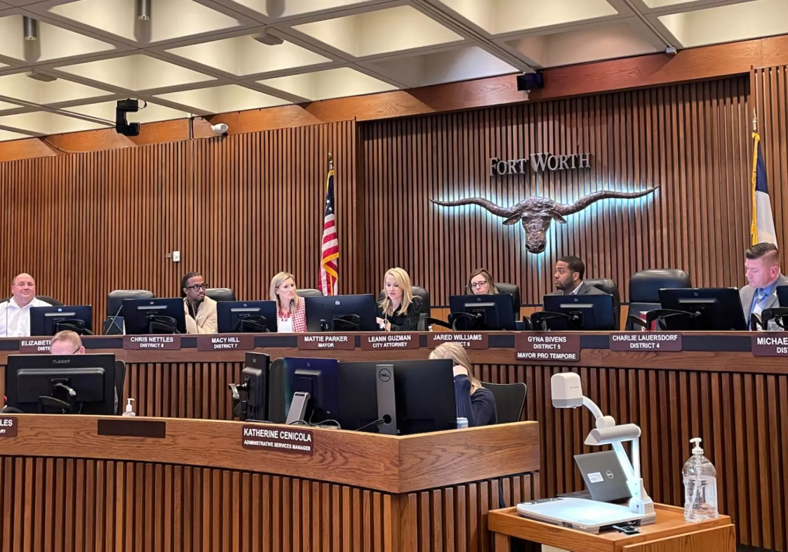
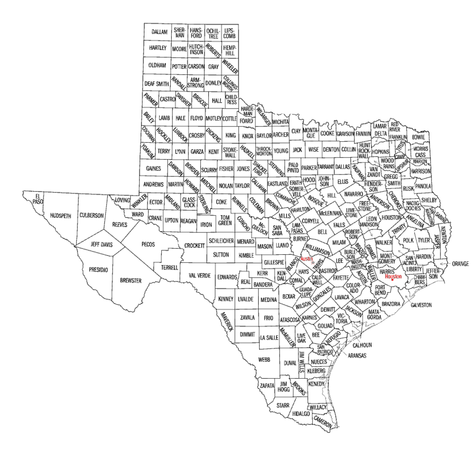
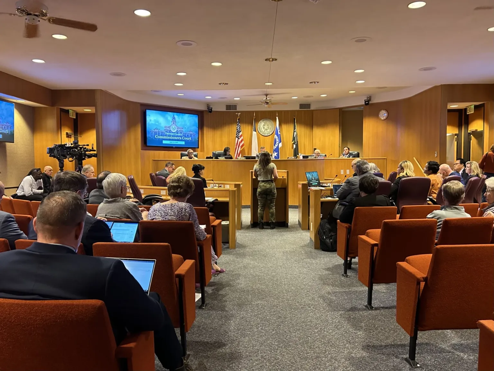

🏛️ Chapter 7: Local Government in Texas ⭐
Explore the structure and function of Texas' 254 counties, 1,214 cities, and thousands of special districts!
🎓 Welcome, Trailblazer!
Enter your name to begin exploring local government in Texas:
Introduction to Local Government
Discover why understanding local government is essential in Texas and explore the changing political dynamics.
Local, State, and National Relations
Learn how local governments derive their power from the state and interact with federal programs.
General Law and Home Rule Cities
Understand the two types of municipal government and their different powers and limitations.
Municipal Governance Structure
Explore council-manager and strong-mayor forms of government and election systems.
County Government Structure
Learn about Texas' 254 counties and the commissioners' court system.
County Officials and Their Duties
Discover the roles of sheriffs, attorneys, clerks, and other county officials.
Special Districts Overview
Explore the "invisible government" of Texas - over 3,350 special purpose districts.
Types of Special Districts
Learn about school districts, MUDs, hospital districts, and TIRZs.
Introduction to Local Government in Texas
🎯 Learning Objectives
- Describe the roles and responsibilities of local political systems in Texas
- Understand the changing political dynamics between state and local governments
- Recognize the scope and scale of local government in Texas
Voters in Texas have leaned conservative throughout the state's history, albeit with a bit of a progressive streak. Even as the nature of the Republican and Democratic parties have changed, the basic ideology of Texas voters has been fairly reliable.
One major change, though, has been the geographic distribution of liberals and conservatives. In recent elections, urban areas have grown increasingly liberal as rural areas have grown more conservative. This has created an interesting conflict with respect to the nature of local governments in Texas. Conservative lawmakers have historically supported the concept of local control, letting local governments – especially cities – conduct their business as they please, relying on local voters to keep regulatory overreach in check.

+15 points! 🎉 Urban-rural divide revealed!
More liberal urban voters have shown a higher level of comfort with government regulation and authority that conservative voters generally oppose. Austin, arguably the most liberal of Texas cities, has enacted ordinances banning grocery stores from offering plastic bags to customers, placing red-light cameras at intersections to automatically ticket drivers who fail to come to a complete stop before making a right turn - even requiring apartment properties to participate in voluntary federal low-income housing programs.
The San Antonio City Council, meanwhile, refused to allow Chick-fil-A restaurants in the city's airport because of the company's financial support of organizations like the Salvation Army and the Fellowship of Christian Athletes, which city leaders felt were insufficiently supportive of gay and lesbian issues.
📸 Figure 7.1: Chick-fil-A restaurant located at the Tech Ridge shopping center in Austin, Texas.
Image credit: Wild Bill, License: CC BY SA
+15 points! ⚖️ State vs. Local showdown!
In 2019, the Texas Legislature passed a number of bills to reign in local government policies it deemed out of control. Red-light cameras were banned statewide. A "Save Chick-fil-A bill" prohibiting cities from refusing to do business with companies that partner with religious groups was enacted. A bill prohibiting new partnerships between cities and abortion providers was also signed into law. As the demographics and politics of Texas change, how will future legislators expand or contract the powers of local governments?
📊 Texas Local Government by the Numbers
Understanding government in Texas is impossible without a study of local governments. Texas has:
- 1 state government (under 1 federal government)
- 254 counties
- 1,214 cities
- 1,079 independent school districts
- 2,600+ special purpose districts
These special purpose districts cover everything from rural fire prevention to mosquito control. The variety and scope of local government in Texas is truly remarkable, making it essential to understand how each level operates and interacts.
The Relationship Between Local, State, and National Government
🎯 Learning Objectives
- Explain the relationship between the local government, state government, and national government
- Understand how different types of local government derive their power
- Recognize the role of preemption laws
📸 Figure 7.2: County, state, and U.S. flags at Kaufman County Veterans' Memorial Park.
Image Credit: pxhere, License: CC0
Whereas the federal government and state governments share power in countless ways, a local government must be granted power by the state. The way power is granted and limited is different for different types of local government.
+15 points! 🗺️ Geographic puzzle revealed!
Counties are general-law forms of government, created specifically by the state. Geographically, counties are like puzzle pieces - every square inch of Texas is in one of the state's 254 counties. Counties are given specific powers by the state under the Constitution and state statutes and have virtually no flexibility. Cities, on the other hand, are created by their citizens, who apply for a charter to create one. Most of Texas does not lie within the city limits of any city.
While small cities operate much like counties, with specific powers granted and limited by the state, larger "home rule" cities have tremendous flexibility. Cities like Austin have passed ordinances expanding the concept of a municipal government into social justice and environmental regulation areas that have prompted the state legislature to begin limiting the powers of home rule cities.
+15 points! 🎭 Political tension exposed!
"Preemption" laws - state laws limiting the powers of local governments - are controversial. Conservatives comprise the majority of both chambers of the state legislature and historically favor the concept of local control. As voters in many urban areas trend more progressive, favoring social justice and environmental regulations beyond those favored by state lawmakers, the concept of local control begins to clash with the legislature's basic ideological standards.
+15 points! 🏠 Federal-local connection revealed!
Cities sometimes derive power and funding directly from the federal government. Most large Texas cities have been granted "substantial equivalency" by the U.S. Department of Housing and Urban Development, meaning the city's Fair Housing ordinance is basically the same as the national law. Those cities are empowered to an extent to enforce the Federal Fair Housing Act on the federal government's behalf.
General Law and Home Rule Cities
🎯 Learning Objectives
- Explain the structure and function of municipal government in Texas
- Distinguish between general law and home rule cities
- Understand limited annexation and extraterritorial jurisdiction
While every square inch of Texas is included in one of its 254 counties, not all of Texas falls inside the limits of a city. Cities are created by its citizens, who are granted a charter by the state of Texas in the same way a corporation operates under a state charter.
+15 points! 🗺️ Annexation powers revealed!
Larger cities (those exceeding 225,000) have a unique authority: that of "limited annexation", whereby an adjoining area may be annexed for purposes of imposing city ordinances related to safety and building codes. The residents can vote for mayor and council races but cannot vote in bond elections (and, consequently, the city cannot directly collect city sales tax from businesses or city property tax from owners).
The City of Houston has exploited a provision in the state law that allows it to share in sales tax revenues along with special districts (municipal utility districts, for instance) that cross an area "annexed for limited purposes." This has led to a spiderwebbing known as limited purpose or special purpose annexations that consist of mostly commercial properties facing major streets.
+15 points! 📋 Planning process explained!
The purpose of limited annexation is to allow the city to control development in an area that it eventually will fully annex; it is meant to do so within three years (though it can arrange "non-annexation agreements" with local property owners), and those agreements with municipal utility districts also cloud the picture. During each of the three years, the city is to develop land-use planning for the area (zoning, for example), identify needed capital improvements and ongoing projects, and identify the financing for such as well as to provide essential municipal services.
+15 points! 🗳️ Election rules revealed!
Municipal elections in Texas are nonpartisan in the sense that candidates do not appear on the ballot on party lines, and do not run as party tickets. However, a candidate's party affiliation is usually known or can be discerned with minimal effort (as the candidate most likely has supported other candidates on partisan tickets). In some instances, an informal citizen's group will support a slate of candidates that it desires to see elected (often in opposition to an incumbent group with which it disagreed on an issue). However, each candidate must be voted on individually.
Municipal Governance Structure
🎯 Learning Objectives
- Compare council-manager and strong-mayor forms of government
- Understand at-large vs. single-member district elections
- Recognize how different Texas cities structure their governance
Who runs city government? Cities in Texas can be organized in a variety of ways. The most common structure is the council-manager form of government.

📸 Figure 7.3: Mayor Sylvester Turner presided over this Houston City Council meeting in 2019.
Image Credit: Andrew Teas, License: CC BY
+15 points! 🔧 Practical governance revealed!
Citizens in San Antonio decided long ago that the political skill set required to be elected mayor of the city was not necessarily the skill set required to manage the day-to-day operations of a municipal water and sewer system with more than 12,000 miles of pipe – enough to stretch from Texas to Australia. While the mayor of San Antonio presides over council meetings, the daily operations of city government are overseen by a professional city manager, who is hired by the city council for that purpose.
📸 Figure 7.4: Unlike most cities, Houston has an independently-elected chief financial officer - Chris Brown, speaking here to a Houston business group in 2018.
Image Credit: Andrew Teas, License: CC BY
+15 points! 💰 Checks and balances revealed!
Houston's strong-mayor system is considered especially strong since Houston mayors also have unilateral control over the city council agenda. On the other hand, Houston has a unique counterbalance in the form of an independently-elected city controller, a chief financial officer who must concur in all city expenditures and bond issues, and who can conduct independent audits of city departments.
+15 points! 🎯 Election system debate revealed!
At-large systems are frequently criticized for making it difficult for members of racial minority groups to be elected. Single-member district systems are criticized for creating a "turf" mentality that places parts of town in competition with each other for parks and libraries, removing the political incentive for council members to consider the needs of the city as a whole. Houston has a mixed system, with five members elected at large, eleven from single-member districts.
County Government Structure
🎯 Learning Objectives
- Explain the structure and function of county government in Texas
- Understand the history of Texas counties
- Recognize the commissioners' court structure
Texas has a total of 254 counties, by far the largest number of counties of any state. Under Spanish and, later, Mexican rule, Texas was divided into municipios, which, despite sharing a name origin with municipalities, were more like the counties of today – large districts containing one or more settlements and the surrounding rural land.

+15 points! 📜 County history revealed!
When Texas became a Republic in 1836, the 23 municipios became counties, with a structure that changed only slightly before, during, and after the Civil War. By 1870, Texas had 129 counties, and the Constitution of 1876, still in place today, went into significant detail about their formation and operation. The last new county to be established was Loving County in 1931.
📸 Figure 7.5: Fort Bend County was created as part of the Republic of Texas in 1837. This 1898 map shows many of the original land grants.
Image Credit: Andrew Teas, License: CC BY
The structure of county government in Texas is defined in the Constitution, so it's not surprising that the form closely follows the plural-executive model of state government.
📸 Figure 7.6: This Harris County Commissioners Court meeting in 2018 was chaired by former Harris County Judge Ed Emmett.
Image Credit: Andrew Teas, License: CC BY
+15 points! 🏛️ Independent officials explained!
Many county functions are run by independently elected officials, who answer directly to the voters, rather than to commissioners' court. While county commissioners have authority over each official's budget, they have little to say about the day-to-day administration of county offices. In most counties, these independently-elected officials include the county sheriff, the county attorney, the district attorney, the county clerk, the district clerk, the county treasurer, and the county tax assessor-collector as well as a number of judges that varies widely with the population of the county.
+15 points! ⚠️ County vulnerabilities exposed!
Texas counties are prone to inefficient operations and are vulnerable to corruption, for several reasons. First, most of them do not have a merit system but operate on a spoils system, so that many county employees obtain their positions through loyalty to a particular political party and commissioner rather than whether they actually have the skills and experience appropriate to their positions. Second, most counties have not centralized purchasing into a single procurement department which would be able to seek quantity discounts and carefully scrutinize bids and contract awards for unusual patterns. Third, in 90 percent of Texas counties, each commissioner is individually responsible for planning and executing their own road construction and maintenance program for their own precinct, which can result in poor coordination and duplicate construction machinery.
County Officials and Their Duties
🎯 Learning Objectives
- Identify the major elected county officials in Texas
- Understand the duties and responsibilities of each county official
- Recognize the unique challenges of Harris County

+15 points! 🚔 Law enforcement role revealed!
The sheriff is the county's chief law enforcement officer. The sheriff also manages the county jail and provides security for the county courts. This combination of responsibilities makes the sheriff one of the most visible and important county officials.
+15 points! 📋 Recordkeeping duties revealed!
County Clerk: The county clerk is the county's custodian of records and documents, in charge of public records such as bonds, birth and death certificates, marriage licenses. The county clerk is also the chief election officer in most counties, administering elections and counting the votes.
District Clerk: The district clerk is the recordkeeper for all records pertaining to the state district courts in that county. The district clerk coordinates the jury selection process and manages court registry funds.
+15 points! 🏙️ Big county challenges revealed!
Unlike cities, which can receive sales tax revenue, counties are funded almost entirely with property taxes. Harris County's population is nearly 5 million people as of 2019, with more than 2 million in the unincorporated area. If the unincorporated part of Harris County were a city, it would be the fifth-largest city in the United States. Fourteen states have fewer residents than the unincorporated part of Harris County, which has no building code and limited land use regulation.
Meanwhile, in West Texas, Loving County has the exact same governance structure to administer a county with an estimated population of 152 – from which voters must choose at least a dozen elected county officials.
"The unique, ongoing challenge for Harris County government is to meet the needs of this rapidly growing unincorporated area without the funding sources provided to large cities in Texas." — Harris County Annual Budget Report
Special Districts: The Invisible Government of Texas
🎯 Learning Objectives
- Explain the structure and function of special districts in Texas
- Understand why special districts are called the "invisible government"
- Recognize the scale and scope of special districts in Texas
"In general, most citizens know comparatively little about the jurisdiction, structure, functions, and governance of special purpose districts, thus making them the invisible government of Texas."
Texans seem to love special purpose districts. As of 2014, Texas has approximately 3,350 of them, and the number increases every year. There are far more special purpose districts in Texas than cities and counties combined, yet most Texans know almost nothing about their function, structure, or governance.
+15 points! 🏗️ District formation revealed!
Districts can be created by the Texas Legislature, by local governmental bodies, or sometimes by a state agency. Districts are controlled by a board of directors, sometimes elected by voters but sometimes appointed by the legislature or the governing body of a local city or county.
If you are taking this class from a community college, your college is a special-purpose district – a community college district created by the state legislature and funded mostly by an ad valorem tax levied on property within the district boundaries.
📊 Texas Local Governments Comparison
- Counties: 254
- Cities: 1,214
- Special Purpose Districts: 3,350+
Special districts outnumber cities and counties combined!
+15 points! 💰 Tax comparison revealed!
School districts generally levy a higher property tax rate than any other jurisdiction. The Katy Independent School District has a property tax rate of $1.52 per $100 of property value, more than three times the $0.49 rate of the City of Katy. Despite the cost to taxpayers and overall importance of their mission, school district trustees often receive less attention from voters and the press than city council members.
+15 points! 📋 Governance structure revealed!
A school district is governed by a board of trustees, elected in a non-partisan election – generally in May of odd-numbered years. Elected school trustees are volunteers, receiving no salary for their services. They hire a superintendent to run the day-to-day operations of the school district. The board of trustees sets the district property tax rate, approves the salary schedule for teachers and staff, and approves contracts for the construction and maintenance of school facilities and equipment.
School districts are also transportation and food-service providers – often massive ones. The Houston Independent School District serves more than 269,000 meals and transports approximately 36,000 students to and from school on a fleet of nearly 1,000 buses every school day.
Types of Special Districts in Texas
🎯 Learning Objectives
- Understand the different types of special districts in Texas
- Explain how MUDs provide infrastructure for new developments
- Recognize how TIRZs work to redevelop troubled areas
+15 points! 🏗️ Infrastructure financing revealed!
A MUD can be created by the legislature or by the Texas Commission on Environmental Quality with specific geographic boundaries. Once established, the residents of the district (sometimes a few development company employees moved into trailers specifically to be voters) vote to authorize the district to sell bonds – borrowing money from bondholders, who are paid back later with interest. The district uses the money raised from selling bonds to build a water and sewer system for the new subdivision. Homeowners then pay a property tax, as well as water and sewer rates for the water they use, to the district, which uses that money to repay the bonds.
+15 points! 🏥 Healthcare impact revealed!
The Harris County Hospital District (now called simply Harris Health) collects a property tax of $0.17 per $100 of property valuation. With the $717 million that tax raised in 2018, Harris Health handled more than 161,000 emergency room visits and more than 1.7 million outpatient clinic visits.
In addition to the categories discussed, Texas has dozens of other types of special-purpose districts from rural fire prevention districts, which provide fire protection services, to mosquito control districts that test for evidence of mosquito-borne diseases and spray insecticide.
+15 points! 🌟 Redevelopment magic revealed!
The taxable value of commercial property in a TIRZ is "frozen" at a certain point in time, with the city – sometimes in partnership with other taxing jurisdictions – continuing to collect taxes as if the value of property within the zone doesn't change. If redevelopment efforts are successful in improving the area and raising property values, the TIRZ keeps the increment between what the city collects and what the city would have collected had the property value increase been applied, with that money being used to finance further improvements in the area – new and improved streets, parks, better drainage, even additional police patrols.
To a city, in theory at least, they would likely have never collected that increment anyway, since property values in blighted areas tend to be stagnant. When the TIRZ expires, however, the city realizes a windfall of additional tax revenue, as well as an area with better infrastructure and a healthier business and residential climate.
📚 Chapter 7 Glossary Review
TCC Trailblazer Trek - Completion Report
Chapter 7: Local Government in Texas
| Section | Topic | Status | Points | Time |
|---|---|---|---|---|
| 1 | Introduction to Local Government | ❌ | 0/180 | --:-- |
| 2 | Local, State, and National Relations | ❌ | 0/215 | --:-- |
| 3 | General Law and Home Rule Cities | ❌ | 0/215 | --:-- |
| 4 | Municipal Governance Structure | ❌ | 0/215 | --:-- |
| 5 | County Government Structure | ❌ | 0/215 | --:-- |
| 6 | County Officials and Their Duties | ❌ | 0/215 | --:-- |
| 7 | Special Districts Overview | ❌ | 0/215 | --:-- |
| 8 | Types of Special Districts | ❌ | 0/215 | --:-- |
⏱️ Time Analysis
📝 Instructor Note: This report confirms completion of Chapter 7: Local Government in Texas. Time spent per section is tracked automatically—sections completed faster than expected will trigger a pacing alert.
Use your browser's "Save as PDF" option. Submit this PDF — screenshots will not be accepted.